Ecoalf retail development
Permanent corners and temporary retail spaces developed across Spain and Portugal. Each site had a different footprint, yet all needed to express the same brand through a flexible and clearly documented system.
The challenge
Each location brought its own circulation, structural conditions, existing furniture and commercial priorities. The task was not to repeat one layout, but to adapt a shared kit of parts without losing clarity, visibility or brand consistency.
Lisbon menswear corner
The layout works around existing columns while preserving clear views from the main aisle and a readable route through the collection.
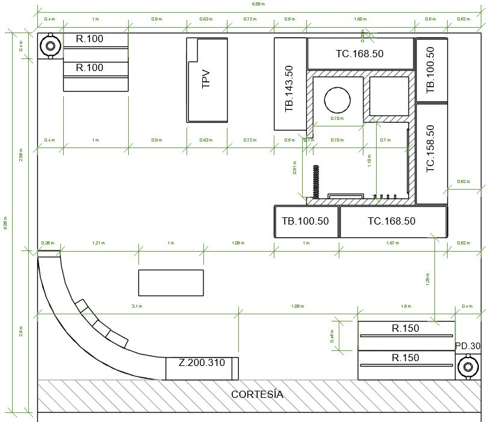
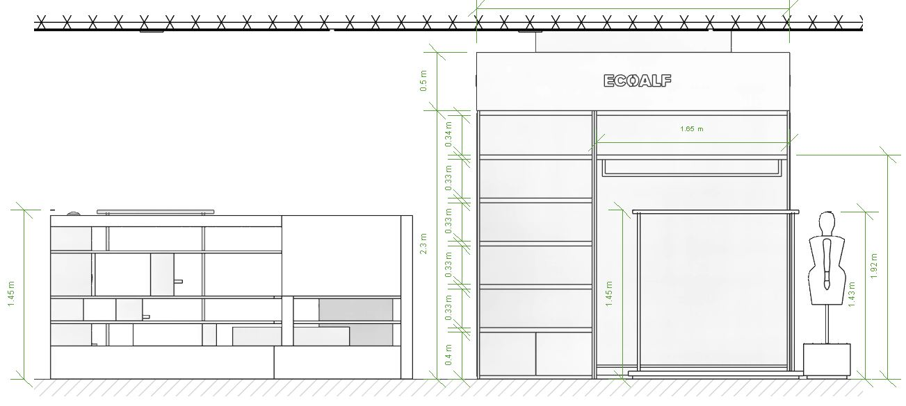
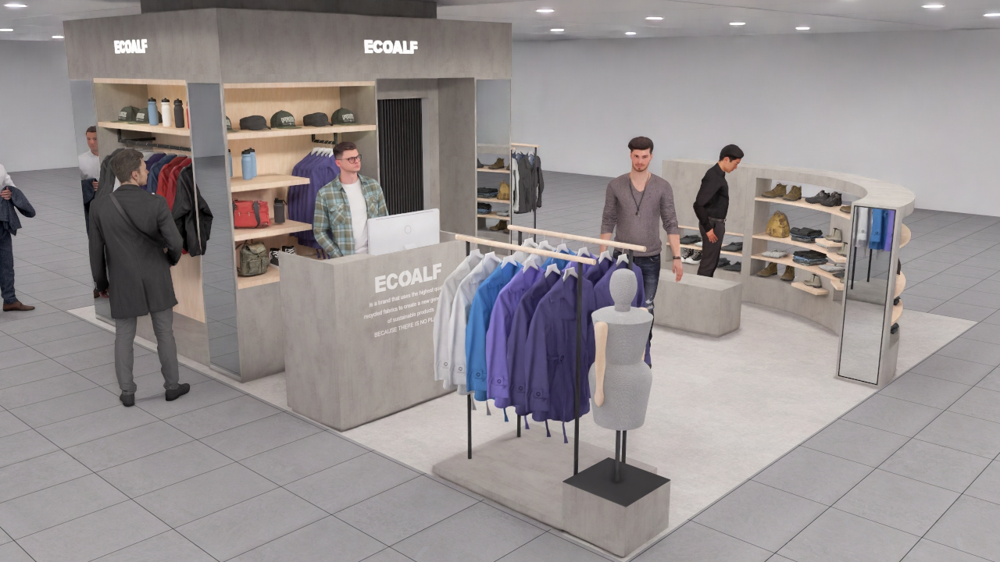
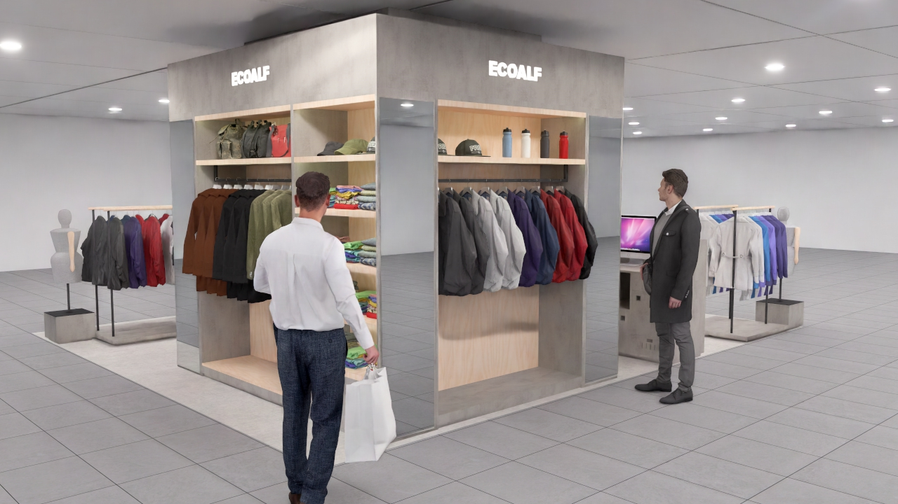
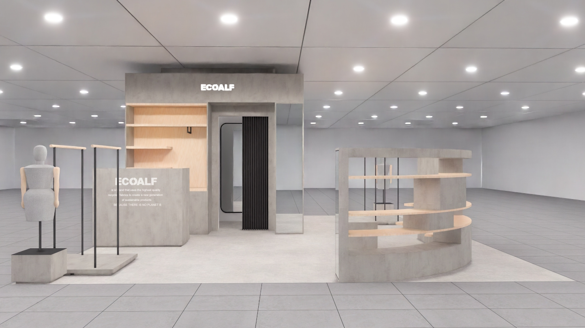
Lisbon womenswear corner
Developed alongside the menswear area so both corners feel related without becoming mirror copies of one another.

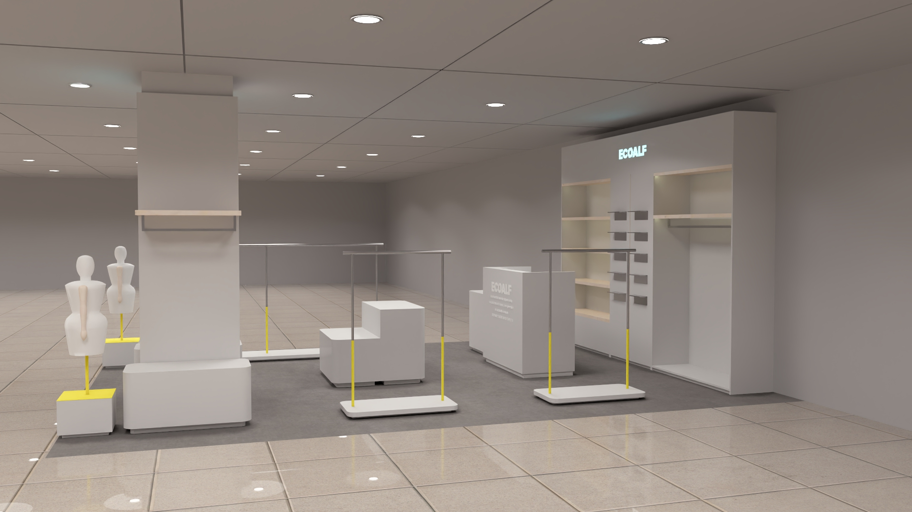
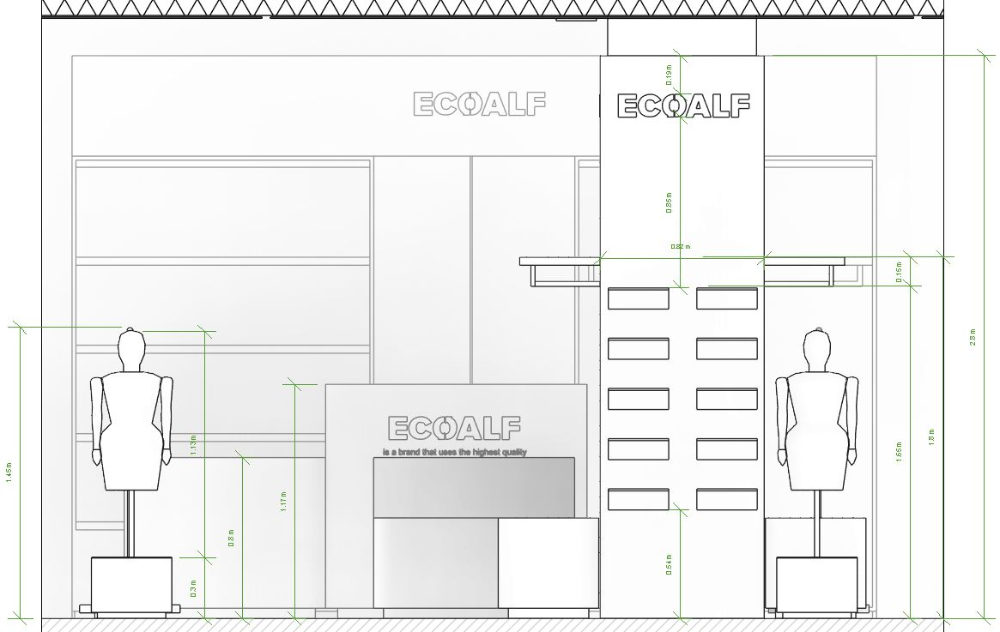
My contribution
I organised the available site information, developed layout options, prepared dimensioned plans and elevations, updated furniture schedules, followed procurement and checked material availability. The documentation was assembled into a coherent package for fabrication and handover to the person responsible for installation. Existing furniture was retained whenever it still supported the new layout.
Marbella corner
A lighter material expression suited the coastal location, while a longer display run increased capacity without closing the corner visually.
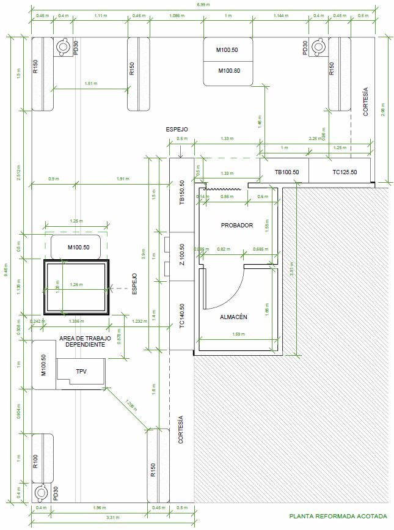
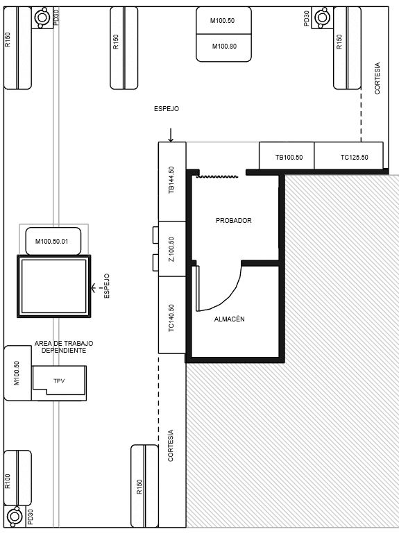

Vigo menswear corner
The largest site in the group allowed the system to expand with fitting rooms, accessories and a more complete customer journey.
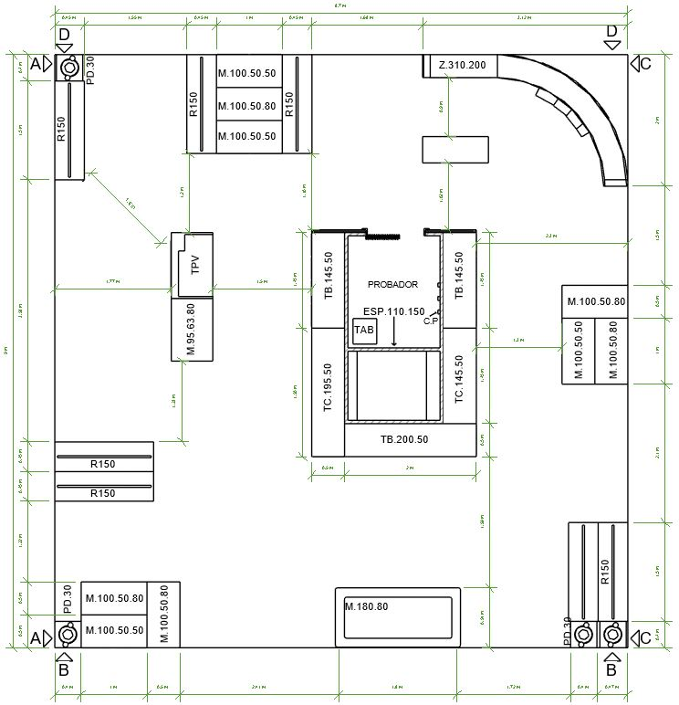
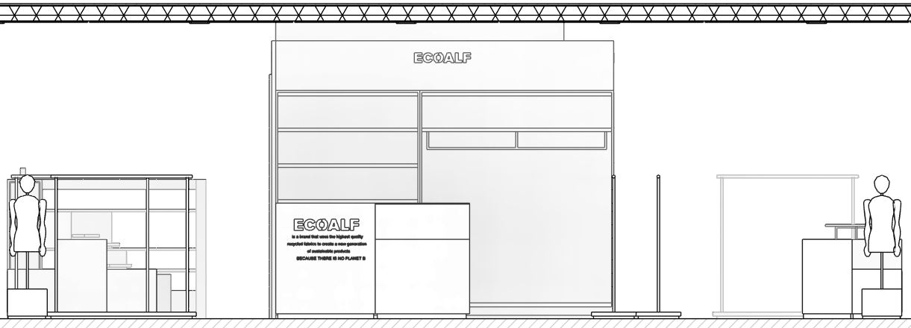
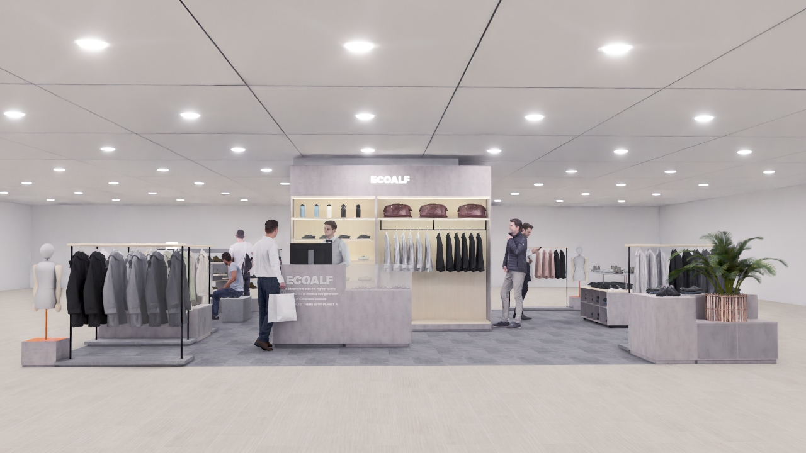

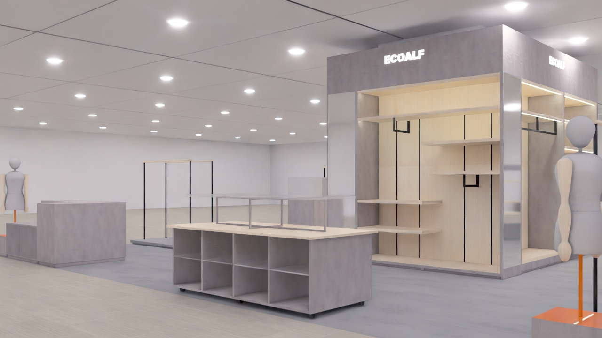
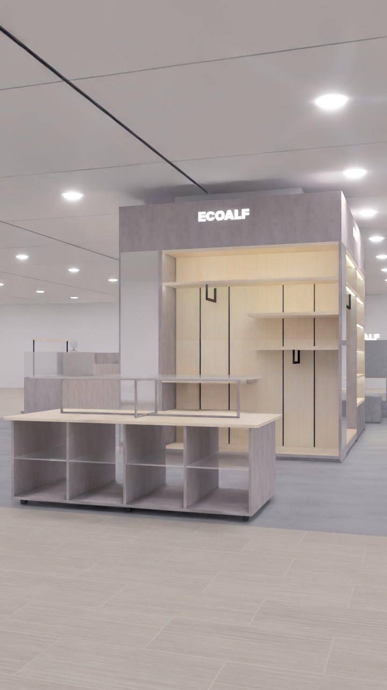
Vigo womenswear · layout studies
Several alternatives were tested within the same footprint before the final arrangement was prepared for production.
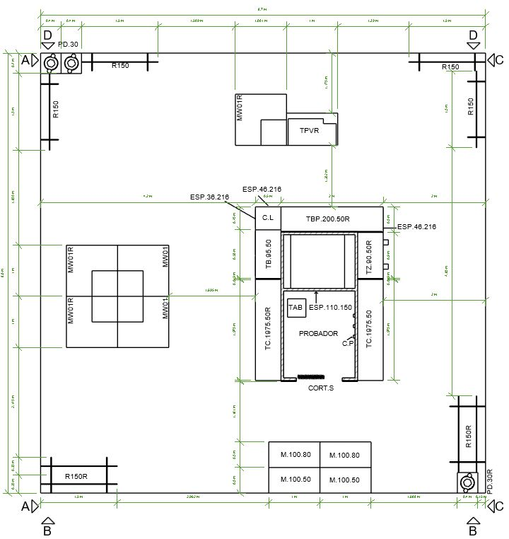
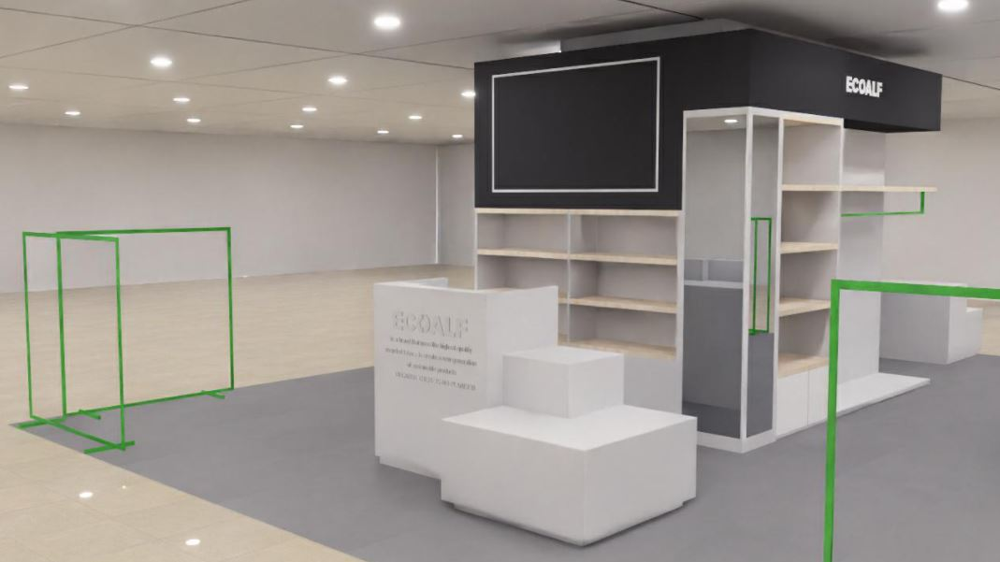
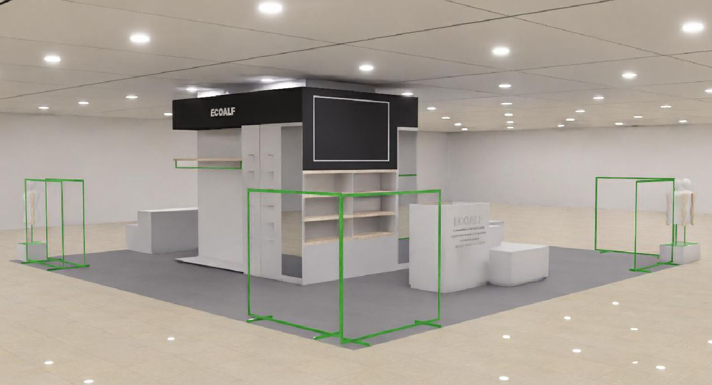
What stayed with me
A repeatable retail system is only useful when it can respond to real spaces. The strongest constant across these projects was not one fixed layout, but a consistent way of documenting decisions.